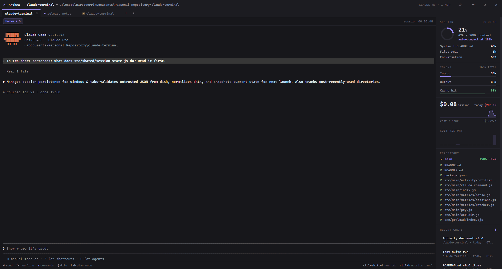

The terminal that opens already inside Claude Code.
Open a directory and Claude Code is running. Beside it, a panel shows how much context you are burning, what the session costs and which tab needs you, without asking.
Installer
Download for Windows Per-user, no admin rights, updates itself. Not code-signed yet: SmartScreen warns once.winget
winget install iFrosty-tech.Anthra
Scoop
scoop bucket add anthra https://github.com/iFrosty-tech/anthra
scoop install anthra

- Tabs that tell you who needs youA dot per tab, Windows toasts and a taskbar badge when Claude waits for a permission or finishes a turn.
- Context and cost, liveContext against the auto-compact threshold, tokens, cache hits, session and daily cost with history.
- Pick up where you left offResume any chat in one click, and get your windows, tabs and chats back on launch.
- Stays out of Claude Code's wayA real PowerShell on ConPTY. Anthra never touches your Claude Code configuration.